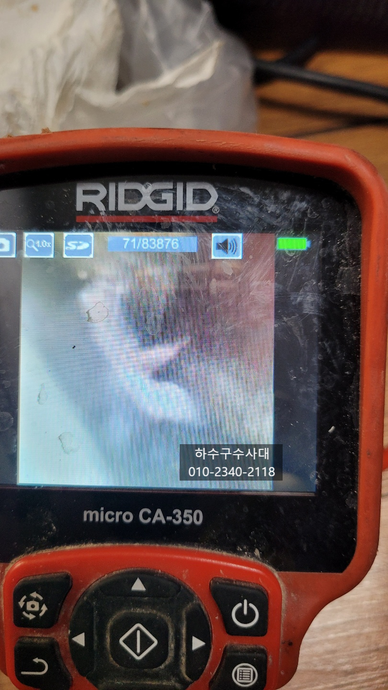
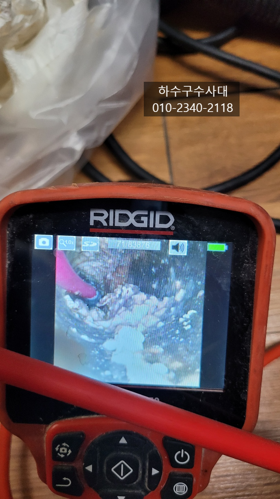
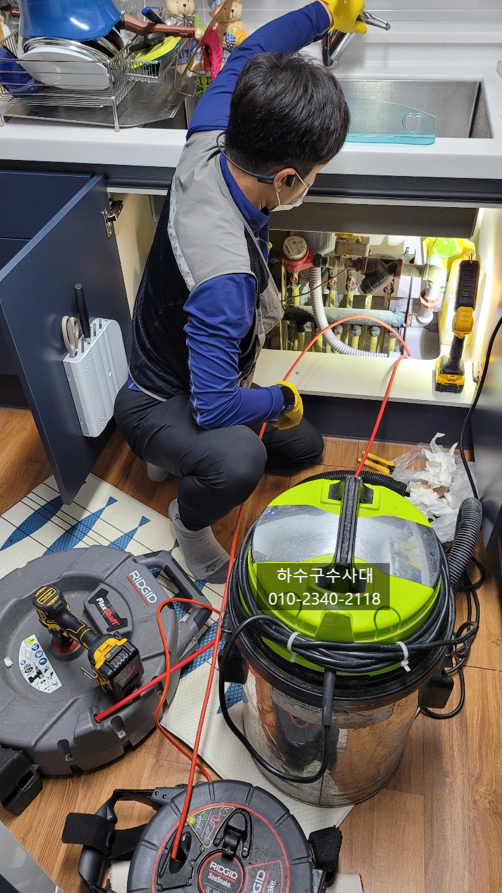
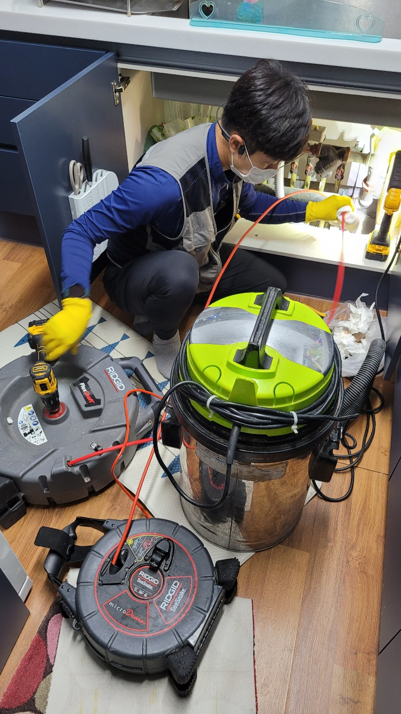

🏠 화성시 싱크대하수구막힘 싱크대배수구뚫음
화성 싱크대막힘 전문 시공 후기

📋 작업 개요
- 위치: 화성
- 서비스 유형: 싱크대막힘, 하수구막힘, 배관막힘, 역류해결, 뚫는업체
- 작업 일시: 2021. 10. 28. 0:34
- 업체명: 하수구수사대 (010-5615-2118)
🔍 문제 상황
화성시 싱크대하수구막힘 싱크대배수구뚫음
오늘은 화성시에 위치한싱크대막힘 현장을
다녀왔는데요 아파트는 동마다 라인마다
싱크대배관구조는 모두 같지만 배관기울기나
사용자에 따라 막힘증상은 다를수 있습니다.
주로 배관기울기가 좋지않은 곳에서 막힘증상이
더 빨리 나타나는데요 요즘은 #음식물처리기 사용으로
막힘증상이 빨라지기도 합니다.
주로 배관기울기가 좋지않아 물이 고이게 되면
기름성분이 배관에 조금씩 붙어 장기간 방치하게되면
딱딱하게 배관에서 굳게되는데 동맥경화처럼 배관구멍이

🔎 원인 분석
💡 전문가 진단: 하수구수사대 010-2340-2118
좁아지게 되면 막히는 증상이 나타나게 됩니다.
오늘아파트싱크대막힘 현장도 1년전에 뚫었지만
또 막힘증상으로 물이 역류하여 연락을 주셨습니다.
전체적으로 리모델링을 했지만 배관까지는 리모델링을
하지 않으셨어요^^
내시경카메라로 배관속을 들여다보니 기름덩어리가 배관위쪽에
자리잡고 있고 더 안쪽으로 들어갈수록 점점 좁아진 상태였습니다.
물이 조금씩은 나가지만 조금만 양이 늘어나면 넘치는 상태로
좀 심각한 상태입니다.
배관에 기름덩어기라 많기 때문에 일반장비로 뚫기만해서는
얼마가지않아 또 막힐수가 있어 모두 제거하는

🔧 작업 과정
작업을 진행하기로 하였습니다. 이렇게 깨끗하게 제거를
해야 오랜기간 사용이 가능하기 때문입니다.
하수구수사대
010-2340-2118
보통은 배관에 기름기가 쌓이게 되면 막힘증상도 있지만
악취도 나기때문에 꾸준한 관리로 막힘증상과 악취를 모두
예방해야합니다. 우선 설거지후 물을 충분히 흘려보내주시고
한달에 한번쯤은 펑크린 같은 세정제를 넣어 기름기를 없애주는
관리를 해주시면 좋습니다.
특히 음식물처리기를 사용하시는 분들은 음식물을
갈아낼때 물은 충분히 흘려보내 갈린음식물이
배관에 남아있지 않게 해주는것이 중요한데
갈아낸 음식물이 배관에 머물러있다면 얼마가지않아
막히는 증상이 나타나게 되니 조심하셔야해요.
이곳도 배관 구배가 좋지않아 물이 고여있는것을
확인 할수 있는데요 배관구조를 바꾸지 못하지만
관리를 꾸준히 해주신다면 기름이


✅ 작업 완료
붙는것을 방지해 줄수있습니다.
배관에 붙어있는 기름덩어리를 모두제거하고
물을 내려보는 테스트도 해줍니다.
저희 하수구수사대는 서울,경기,인천 전지역에서
활동중이니 언제든지 연락바랍니다^^




⚠️ 주방 싱크대 배관 막힘 예방 수칙
- ✅ 기름기가 묻은 식기나 프라이팬은 설거지 전 키친타올로 반드시 기름때를 닦아내세요.
- ✅ 주기적으로 싱크대 개수대에 뜨거운 물을 가득 받아 한 번에 내려 배관 내부 기름을 씻어내세요.
- ✅ 배수구 거름망을 미세한 필터로 사용하시고 음식물 찌꺼기가 틈으로 새어 들지 않게 관리하세요.
- ✅ 베이킹소다와 식초를 뜨거운 물과 함께 일주일에 한 번씩 부어주면 배관 살균과 막힘 예방에 좋습니다.
💡 핵심 정리
- 확실한 장비 작업(내시경 점검 및 샤프트 스케일링)으로 원인을 뿌리 뽑습니다.
- 작업 후 1년 이내에 동일한 부위 재발 시 100% 무상 A/S 서비스를 보장합니다.
- 서울 · 경기 · 인천 전 지역에 24시간 언제든 긴급 출동할 수 있도록 항시 대기 중입니다.
❓ 자주 묻는 질문 (FAQ)
🚨 화성 싱크대막힘 문제로 고민이신가요?
정확한 원인 진단과 확실한 시공으로 재발 없는 해결을 약속드립니다.
24시간 긴급 출동 | 서울 · 경기 · 인천 전지역 | 1년 내 재발 시 무상 A/S